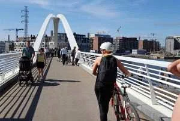
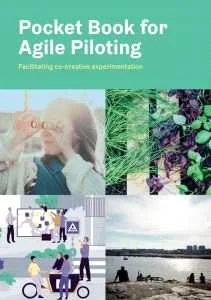
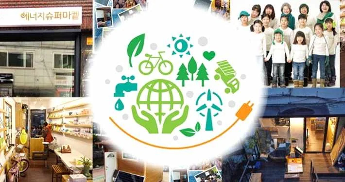
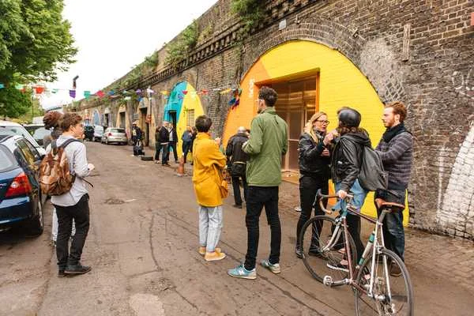

공공디자인 거버넌스
최근 많은 지자체와 공공기관에서 시민을 대상으로 공공디자인 아이디어 공모전이 열리곤 한다. 서울시 디자인거버넌스는 시민들 스스로 발견한 문제를 공론화하고 여러 전문가들이 협업하여 사회 문제를 해결한다.
다원화되고 복잡해진 현대사회에서 소수 디자이너의 직관적인 아이디어로 결과물을 도출해 오던 이전의 디자인 과정은 시민들의 필요(Needs)를 충족시키기에 역부족인 경우가 많았다. 자연스레 디자인 과정에 시민 참여와 이해관계자 및 전문가 협력, 자생력과 지속가능성을 높이기 위한 혁신적인 운영 방식과 체계에 대한 필요성이 부각됐다. 불특정 다수를 의미하는 공(公)과 함께 한다는 의미의 공(共)이 더해진 공공디자인은 이미 다양한 주체의 참여와 함께 과정을 만들어 가는 협력, 모두가 누릴 수 있는 공공성의 가치를 내재하고 있다. 이 같은 공공디자인의 가치 실현을 위한 전략으로 활용되는 것이 ‘문제 해결을 위한 다양한 방법’이라는 관점에서의 거버넌스이다.
시대가 추구하는 사회 조정 양식의 변화에 따라 스스로 진화하는 거버넌스는 그 개념을 한 가지로 명확히 규정하기 어렵다. 거버넌스는 그리스어로 ‘키잡이’를 뜻하는 ‘Kubernetes’에서 유래하여 1960년대에는 정치적으로 국가가 방향타를 잡는 역할을 의미했다. 그러나 민주주의와 시민사회가 발전하면서 사회 구성원 간 협력을 통해 사회문제를 해결하는 네트워크 거버넌스(Network Governance)로 개념이 확장됐다. 정부 중심의 계층제적 거버넌스에서 신뢰 등으로 형성되는 관계망을 통한 방법으로 넓어진 것이다.
네트워크 거버넌스 이후에는 사회적 관계망이 발전하여 협력의 관계를 형성하는 협력적 거버넌스(Collaborative Governance)의 개념으로 발전했다. 이처럼 참여와 협력을 통한 사회 조정 양식으로 발전해 온 거버넌스의 개념은 현재 다양한 조정 양식론과 협력의 방법론을 결합하여 사회문제를 조정하고 관리하는 ‘메타 거버넌스(Meta Governance)’에까지 이르렀다. 즉, 메타 거버넌스의 관점에서 거버넌스는 협치와 참여를 넘어 ‘사회문제 해결 과정의 조정 양식’이라는 넓은 의미로 해석된다.
공공영역에서 사회가 요구하는 다원화된 필요와 문제를 해결하여 공공성과 시민들의 만족도를 높여야 하는 공공디자인에 있어, 이 같은 개념의 거버넌스는 매우 중요한 실행 전략이다. 이러한 관점에서 몇 가지 사례를 통해 현재 공공디자인 영역에서 나타나고 있는 거버넌스의 양상을 살펴보고 그 의미를 되짚어 보고자 한다.
참여와 협력을 통한 시너지 창출, 헬싱키 칼라사타마
다양한 주체의 참여를 통한 디자인 과정은 협업을 통해 시너지를 일으킨다. 거버넌스는 단순히 의사결정 방식에 그치지 않고 디자인 과정 전반에 작용하여, 결과물의 직접적 사용자인 시민과 각 분야 전문가, 협력 관계의 기업 등이 참여하게 하는 방법으로 활용되고 있다.

헬싱키 칼라사타마 / 출처: fiksukalasatama.fi
핀란드 수도 헬싱키에는 ‘물고기 항구’라는 뜻의 칼라사타마(Kalasatama)라는 지역이 있다. 쇠르내이넨(Sörnäinen)이라는 산업 지역에 속한 칼라사타마는 산업화 시기였던 19세기부터 철도와 항만이 들어서면서 100년 넘게 대표적인 항구 도시로 발전했다. 그러나 점차 주변 지역에 항구가 들어서면서 급격한 쇠퇴를 맞았고, 급기야 2008년 모든 항구의 운행을 멈췄다. 사람들의 발길도 도심의 활기도 사라진 칼라사타마에는 새로운 대안이 필요했다.
헬싱키는 도심의 인구 집중 현상과 환경 문제에 대한 해결책으로 칼라사타마에 스마트시티를 계획하기로 했다. 2035년까지 탄소배출 제로화를 선언한 헬싱키는 2013년 칼라사타마에 리빙랩(Living Lab) 시스템을 도입하여 다양한 도시 실험과 주민 참여를 통한 친환경 스마트시티를 육성하기 시작했다. 10년이 다 되어 가는 현재까지 대표적인 스마트시티로 불리는 헬싱키의 ‘스마트 칼라사타마 프로젝트(Smart Kalasatama Project)’는 공공디자인 거버넌스를 통해 지속가능한 도시를 ‘함께’ 만들어 가고 있다.
“Piloting smart and sustainable solutions(똑똑하고 지속가능한 솔루션 파일럿 실험)”
칼라사타마에는 첨단 기술력을 앞세운 모빌리티, 스마트 버스승강장처럼 기존 스마트시티들이 자랑하는 시설물보다 더 이목을 끄는 것이 있다. 애자일 파일럿 프로그램 ‘노페앗 꼬께일룻(Nopeat Kokeilut)’이 그중 하나다. ‘빠른 실험’을 의미하는 이 프로그램은 지자체가 지역 중소 규모 기업의 서비스를 도시 기반 시설과 연결해 실제로 실험해 볼 수 있게 하는 과정이다. 이 과정의 핵심은 지역 주민을 비롯한 정부, 자치단체, 대학 등이 함께 적극적으로 참여하여 스마트 기술 실험에 사용자 의견을 반영한다는 점이다. 주민들은 자신이 직접 사용하게 될 도시 시설에 더욱 관심을 가지고 실험에 임하고, 기업은 사용자의 의견을 수렴하여 완성도 높은 시설을 도시에 반영할 수 있다.
이 같은 방식을 체계적으로 운영하기 위해 결성된 ‘포럼 비리움 헬싱키(Forum Virium Helsinki)’는 칼라사타마 외에도 헬싱키 여러 지역에서 도시 실험을 진행하고 있다. 또한 도시, 기업, 주민 간 협력을 늘리고 유연하게 문제를 해결하는 협력과 애자일 방식을 누구나 쉽게 실천할 수 있도록, 실천 위주의 가이드를 담은 포켓북(Pocket Book for Agile Piloting)을 배포하고 있다.

The Pocket Book for Agile Piloting / 출처: fiksukalasatama.fi
주민, 기업, 학자, 공무원 등 이해관계자로 구성된 ‘칼라사타마 혁신가클럽(Innovator’s Club)’은 이 같은 실험을 운영하기 위한 네트워크 그룹이다. 이 그룹을 중심으로 공동체가 모여 서로 의견을 나눈다. 이 같은 노력을 통해 도시 곳곳에서 다양한 주체가 함께 커뮤니티를 이루며 지역에 필요한 똑똑한 자원들을 만들고 지속해 가고 있다. 주민과 이해관계자들의 참여가 자연스럽게 이루어지고 협력의 결과가 공공의 이익으로 돌아가는 과정에서, 참여와 협력을 통한 거버넌스의 순기능을 엿볼 수 있다.
전문성을 활용한 역량강화, 성대골 에너지자립마을
칼라사타마 사례처럼 여러 주체가 네트워크를 통해 의견을 주고받으며 협력하는 방법도 있지만, 주민들이 지역이 추구하는 가치를 실현하기 위해 능력을 배양하고 역량을 강화하여 지속가능성을 높이는 방법도 있다. 주로 주민을 대상으로 교육과 컨설팅을 하거나 이해관계자 간 워크숍을 통해 문제를 정의하고 해결 방안을 모색하며, 역량강화를 위해 인큐베이팅과 같은 방법을 수행한다.

성대골 에너지자립마을 / 출처: 성대골사람들 홈페이지(sdgpeople.or.kr)
기후변화의 위기 속에서 자생적으로 에너지 자립을 이뤄 가는 마을이 있다. 동작구 상도3, 4동에 위치한 성대골은 2012년부터 10년 넘게 지역 시민단체와 주민들이 주도적으로 에너지 전환 운동을 펼치고 있다.
2010년 성대골에는 주민들의 손으로 지역 도서관이 세워졌다. 도서관을 중심으로 지역 커뮤니티가 활성화되기 시작할 무렵인 2011년, 후쿠시마 원자력발전소 사고 소식을 접한 주민들은 스스로 도서관에 모여 환경과 에너지 문제를 고민하기 시작했다. 이후 주민들은 환경단체의 협조를 구해 문화와 교육을 통한 에너지 전환 운동을 펼쳤다. 2012년부터 2014년까지는 서울시 ‘에너지자립마을사업’에 참여하면서 재생가능에너지와 적정기술로 마을학교 겨울나기를 진행하기도 했다. 또한 마을의 5개 단체로 구성된 ‘마을닷살림 에너지협동조합’을 결성해 에너지 전환을 지향하는 ‘에너지슈퍼마켓’을 온라인과 오프라인에 열었다(박정문, 2017).
2014년부터 협동조합은 에너지 효율 개선 사업을 진행하면서 ‘기후변화&에너지 강사양성과정’과 ‘에너지 리빙랩 프로젝트’ 같은 교육 프로그램과 리빙랩 실험도 진행하고 있다. 주민들은 작은 도서관에 모여 에너지 효율 개선 방법을 배우거나, ‘햇빛발전 협동조합’을 추진하며 에너지 생산과 효율 개선을 위한 뜻깊은 활동을 펼치고 있다.
에너지 절약 운동도 이어지고 있다. 성대골 에너지 전환 운동은 ‘성대골 절전소’를 중심으로 2012년 시작한 에너지 절약 운동이다. 성대골 공동체가 에너지 진단사가 되어 주택에 무료로 에너지 진단 서비스를 제공하고, 동작구 환경과와 협업하여 ‘에너지 클리닉’을 운영한다. 에너지 전환 교육은 2011년 ‘우리동네 녹색 아카데미’를 시작으로 마을에서 환경과 에너지에 관한 다양한 교육과 워크숍으로 이어졌다. 주민들을 에너지 교육자로 양성하고 ‘찾아가는 에너지교실’을 만들어 지역 학교에서 에너지 교육을 하기도 한다.
단순히 수혜에 그치곤 했던 기존의 도시 디자인과 달리, 성대골 에너지자립마을은 주민 스스로 환경과 에너지에 관심을 가지고 역량을 강화하는 거버넌스를 통해 새로운 지역 아이덴티티를 만들며 자생적으로 발전하고 있다.
권리이양을 통한 지속가능성 및 건전성 확보, 민와일 스페이스
지역에 존재하는 자산을 거버넌스 과정을 통해 공공이 활용할 수 있는 공공재나 지역 자산으로 운영하는 사례가 늘고 있다. 지역의 유무형 재산을 공동으로 소유하거나 관리하여 경제적 가치를 높이는 커먼즈(Commons)처럼, 시민들이 권리를 이양받은 지역 자산을 운영하여 부가적인 이익을 창출하기도 한다.
민와일(Meanwhile)은 영국에서 비어 있는 공실이나 유휴부지를 사회적, 경제적 이익을 위해 임시로 활용할 수 있도록 마련한 방안이다. 공사, 허가, 매매 기간 동안 적지 않게 생기는 유휴공간이 슬럼화되는 것을 막고자 영국의 공공기관인 지역사회지방정부부(DCLG, Department for Communities and Local Government)가 시작했다. DCLG는 2009년 유휴공간 임대법을 제정하면서 민와일 프로젝트를 확대했다. 지역 민와일 프로젝트 가이드에 따라 세입자가 들어오기 전까지 짧은 기간 동안 사회적 기업과 비영리 조직이 비어 있는 공간을 활용하게 했다. 가든이나 팝업, 소규모 기업의 창업 공간 등으로 민간과 공공 소유의 유휴공간을 활용하는 민와일 프로젝트는 지역 사회 활성화와 상생을 위한 방안으로 각광받고 있다.

로보러 정크션(Loughborough Junction) 철도아치 프로젝트 / 출처: meanwhile.org.uk
램버스(Lambeth) 지역의 로보러 정크션(Loughborough Junction)은 2008년 이후 중심 시가지를 중심으로 공실이 늘어나면서 그대로 방치된 철도 아래 공간에 민와일 프로젝트를 실시했다. 철도 아래 공간이 공실이 되어 관리비 부담이 커지자 관리 주체인 철도청은 민와일 프로젝트와 협업을 시작했다. 민와일 스페이스는 지역 주민들에게 워크숍, 사업 등 다양한 용도로 공간을 대여했고, 두 차례에 걸쳐 총 19곳을 활용했다.
공공 부문의 자산을 민간 부문에 이전하고 개발하는 과정을 통해, 철도의 소유주인 철도청은 지역 공동체를 위한 사회적 가치를 실현하는 동시에 공실세를 절감하는 혜택까지 얻었다. 이렇게 공공의 자산을 민간에 이양하여 활용하게 하는 방안은 지역의 문화, 예술 등 사업을 활성화하는 지원책이 된다. 민와일 프로젝트가 플랫폼을 통해 지역 자산을 공공이 함께 누릴 수 있게 함으로써, 방치됐던 유휴공간이 경제적 이윤을 창출하고 지역에 필요한 공간으로 쓰이고 있다.
공공디자인 거버넌스가 안내하는 즐거운 항해길
지금까지 살펴본 세 사례는 참여와 협력을 통한 시너지, 전문성을 활용한 역량강화, 권리이양을 통한 지속가능성의 확보라는 거버넌스의 양상을 보여 준다. 과정의 내용은 조금씩 다르지만, 공공이 직면한 문제와 주민들이 이루고자 하는 지역 사회의 가치를 보다 능동적으로 구현하고 있다는 점에서 공통점이 있다.
이제껏 망망대해에서 어디로 향하는지도 알 수 없는 배 위에 올라타 키를 쥔 선장만 바라보던 시민들은 달라졌다. 작은 쪽배라도 닻을 올려 보고 파도를 느껴 보면서 드넓은 바다를 항해한다.
공공디자인에 관한 국민들의 의견을 적극적으로 수렴하며, 의사결정 과정에 국민들이 참여할 수 있는 다양한 방안을 마련한다.
「공공디자인의 진흥에 관한 법률」 제10조 제4항
공공디자인은 법률을 통해 디자인 과정에 국민들의 참여와 협력을 비롯한 ‘다양한 방안’의 마련을 명시한다. 이러한 방안들은 다양한 조정 양식론과 협력의 방법론을 결합한 사회문제 조정 방식을 지향하는 공공디자인 거버넌스로부터 실현될 수 있다. 우리 사회에서 건강하게 작동하는 공공디자인 거버넌스는 각자의 배 위에서 똑똑한 키잡이가 되어, 항해를 즐기며 목적지에 이르도록 인도할 것이다.
참고문헌
단행본과 보고서
- 박정문, 『성대골 에너지자립마을 활동백서』, 에너지기후정책연구소, 2017.
- 이명석, 『거버넌스 신드롬』, 성균관대학교출판부, 2017.
- 홍익대학교 공공디자인연구센터, 『공공디자인 진흥을 위한 거버넌스 모델(P.D.G.12) 연구』, 2019.
논문과 기사
- 김상희, 「영국의 민와일 프로젝트: 유휴공간을 활용하는 한시적 도시계획」, 『건축과 도시공간』 34호, 2019.
- 양철승, 「사람을 위한 스마트시티 헬싱키 칼라사타마」, 『따뜻:한난』.
- 윤찬영, 「금전적 보상도 없는데… 세계 최고 스마트시티에서 벌어지는 일」, 오마이뉴스, 2020.11.22.
- 이종규, 「성대골에 가면 그린 뉴딜이 보인다」, 『공감』, 2021.04.05.
- 「[동네 한바퀴] 주민이 사랑하는 ‘성대골 에너지자립마을’」, 『SH톡톡』 32호.
웹사이트
- 성대골사람들, http://sdgpeople.or.kr/
- Meanwhile Space, https://www.meanwhilespace.com/
- Smart Kalasatama, https://fiksukalasatama.fi/en/